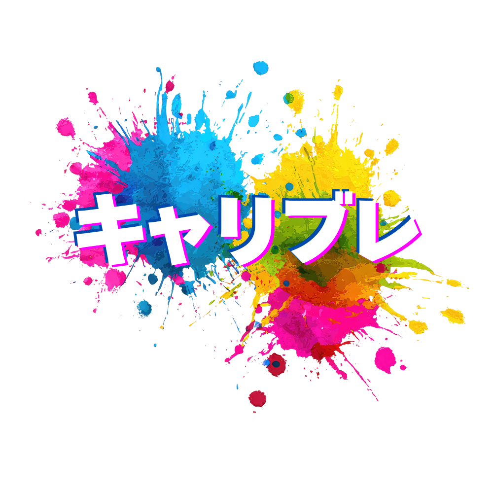
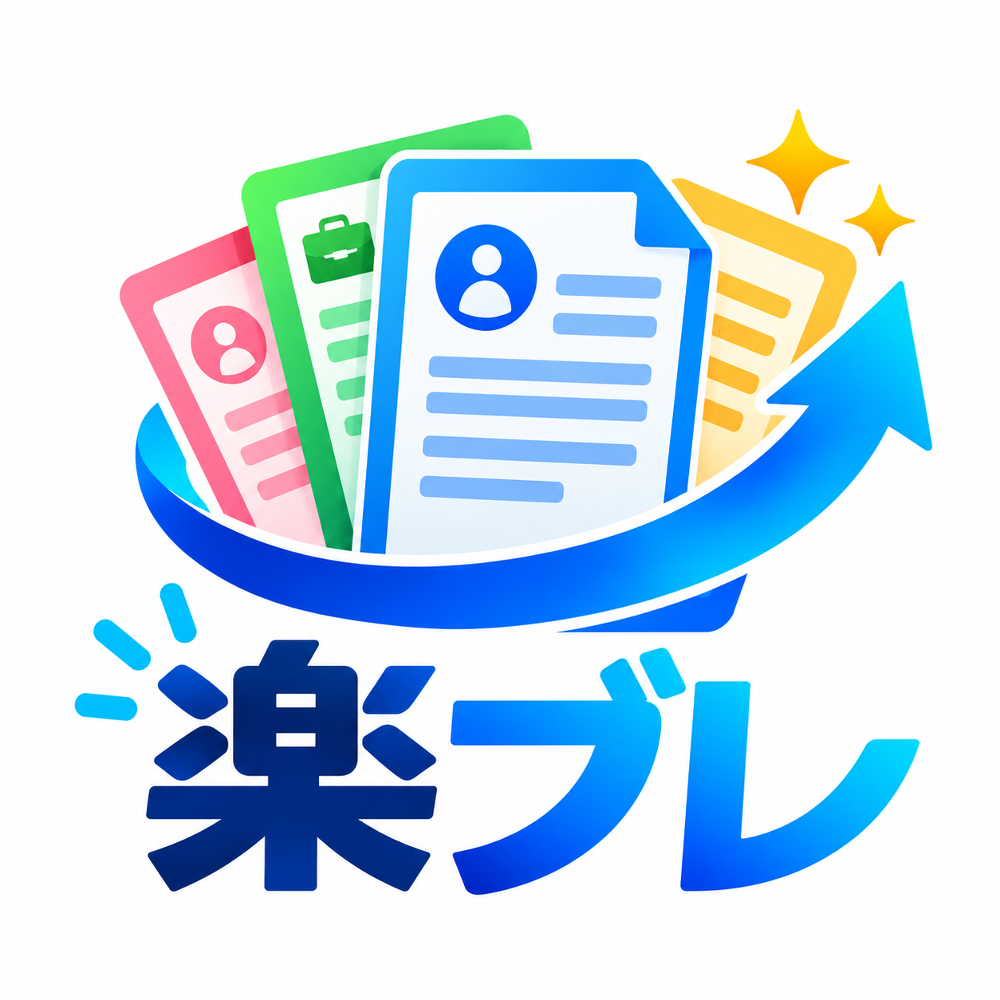

自分を知ることから始める
これまでの経験、得意なこと、苦手なこと、大切にしてきた価値観。自分では当たり前だと思っていることの中に、強みや可能性が隠れている。対話を通じて一緒に言葉にしていく。
VERSION-K / CAREER COACHING
仕事は、人生のすべてではない。けれど、人生の大切な時間を使うもの。だからこそ、自分の気持ちに納得できる働き方を一緒に考えたい。
WORK IS PART OF LIFE
年収、休日、勤務地、仕事内容。条件はもちろん大切だ。けれど、それだけで仕事を選ぶと、働き始めてから「何か違う」と感じることがある。自分は何を大切にしたいのか。どんな人たちと、どんな環境で、どんな毎日を送りたいのか。まずは自分の本音を知ることから始めよう。
これまでの経験、得意なこと、苦手なこと、大切にしてきた価値観。自分では当たり前だと思っていることの中に、強みや可能性が隠れている。対話を通じて一緒に言葉にしていく。
誰かの正解をなぞるのではなく、自分が納得できる選択をする。選択肢を広げ、メリットも難しさも整理し、最後は自分の意思で決められるように伴走する。
考えるだけで終わらせない。応募書類を整える、情報を集める、人に相談する。今できる小さな行動に分けて、焦らず一歩ずつ前に進めるよう支える。
HOW WE SUPPORT
これまでの経験、現在の悩み、理想の働き方を丁寧に伺います。
強みや価値観、希望条件を整理し、大切にしたい軸を明確にします。
転職・就職・現職継続など、状況に合った選択肢と行動計画を考えます。
応募書類や面接準備など、必要な行動を支え、進捗を一緒に振り返ります。
OUR ORIGINAL CONTENT
キャリブレ
キャリブレは、Version-Kが提供するキャリア支援コンテンツです。
これまでの経験や大切にしたい価値観を整理し、自分の強みや可能性を見つめ直す。転職するかどうかを決める前に、まずは「自分はどう働きたいのか」を考えるところから始めます。選択肢を整理し、納得できる次の一歩につなげるために、一人ひとりのペースに合わせてサポートします。

キャリア支援コンテンツ
書類作成サポートツールLINEからお気軽にお問い合わせください。
「自分には無理かもしれない」を、
「まず一歩やってみよう」に変える。
大きな決断を、最初から一人で抱えなくていい。小さな疑問でも、まだ言葉になっていない不安でも、気軽に話してほしい。あなたの歩幅を大切にしながら、一緒に未来を考えていきます。
LET'S TALK
転職するかどうか決まっていなくても大丈夫。まずは今の気持ちを整理するところから始めましょう。
キャリアについて相談する ↗